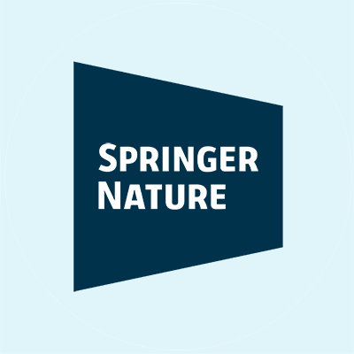
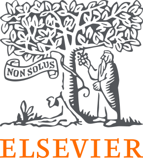
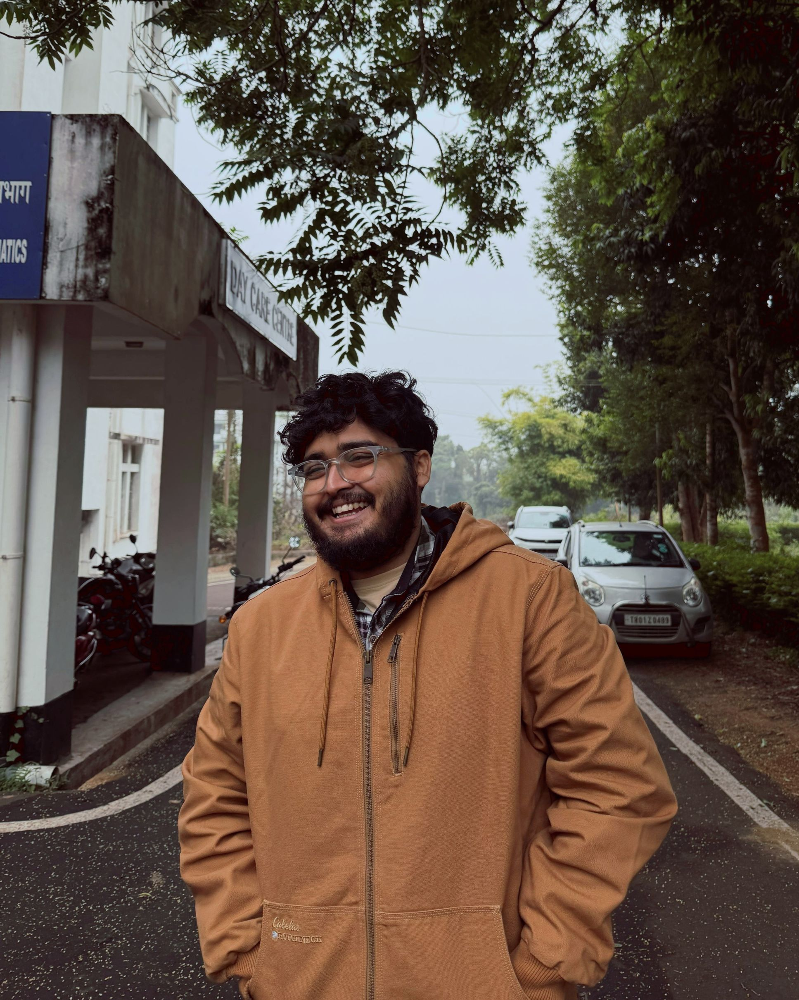
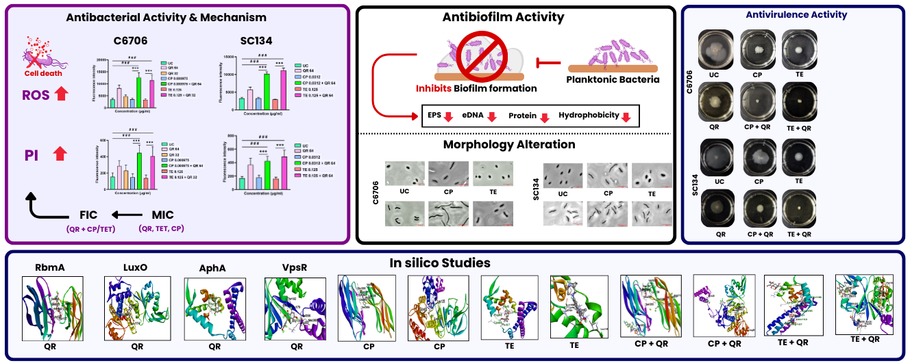
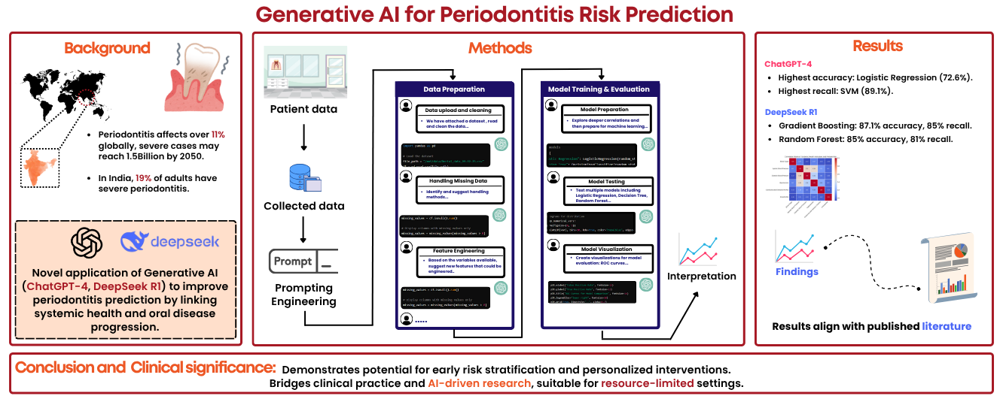
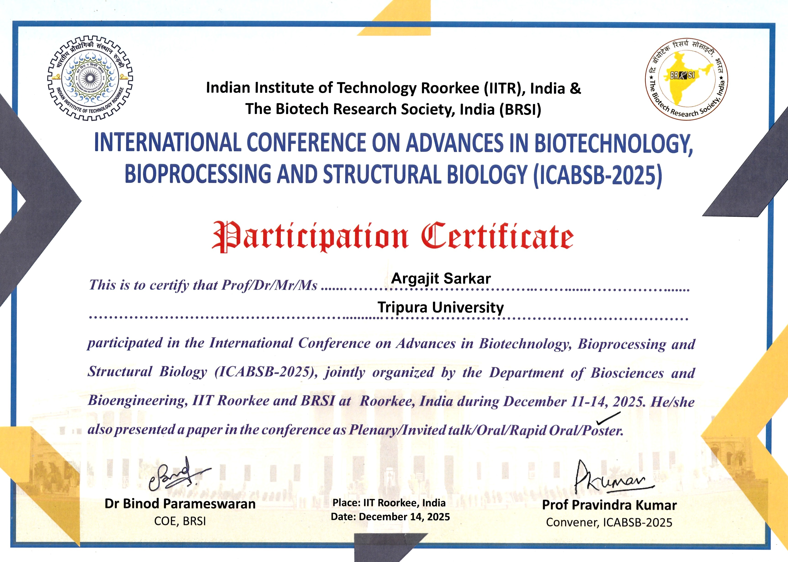
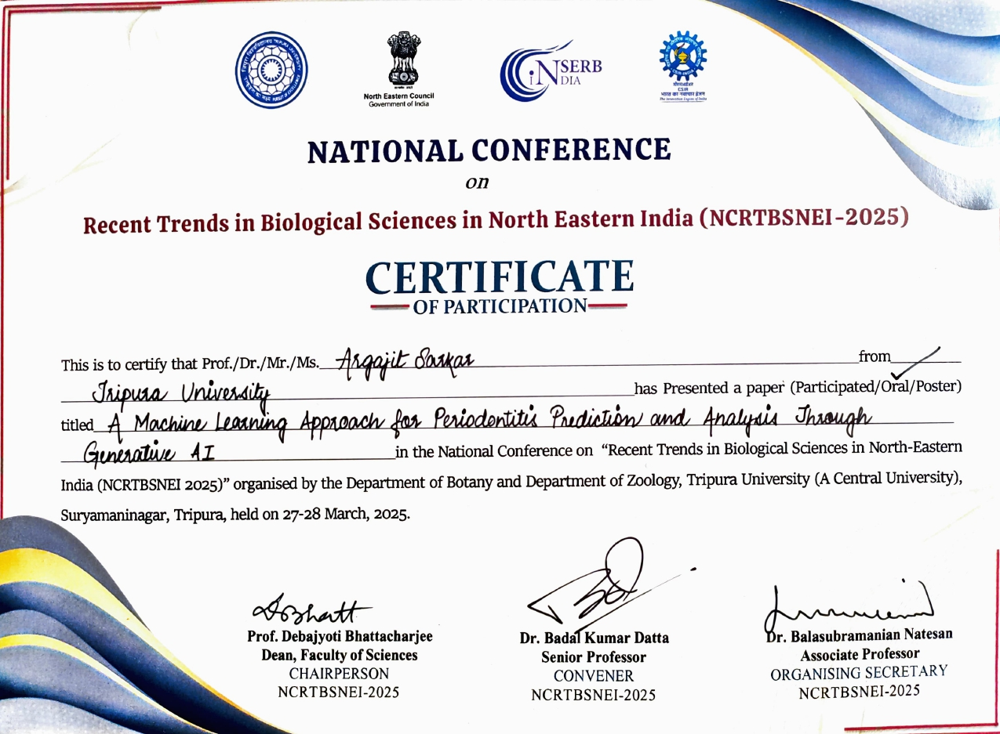

Affiliated With



Microbial Pathogenesis • Deep Learning • LLMs • Drug Discovery
I am a PhD Candidate bridging microbial pathogenesis with Artificial Intelligence. My research involves applying Deep Learning and Large Language Models for Drug Discovery to combat Priority Pathogens. My current project is a data-driven workflow to repurpose drugs against multidrug-resistant pathogens, aiming to create a faster, more efficient pipeline for discovering therapeutics against high-priority pathogens.
Currently working as Project Technical Support - III at an ICMR-funded project and selected as an ASM Future Leaders Mentorship Fellow (2026-28). I also serve as an NEP Saarthi Ambassador appointed by UGC, conducting workshops and promoting key policies of the University Grants Commission and Ministry of Education (Govt. of India).




3 Biotech, 2026
DOI: 10.1007/s13205-025-04621-x


Cytokine, January 2025
Cited by 9

Frontiers in Dental Medicine (Under Revision)
SSRN Preprint

International Conference on Advances in Biotechnology, Bioprocessing, and Structural Biology

National science festival showcasing research across disciplines

Research Symposium on Artificial Intelligence and Computational Biology

National Conference on Recent Trends in Biological Sciences in Northeastern India

India International Science Festival, Global S&T event
Interested in collaboration, research discussions, or just want to say hello?